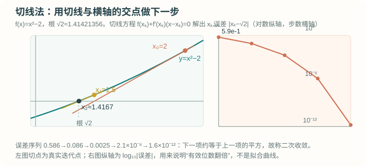
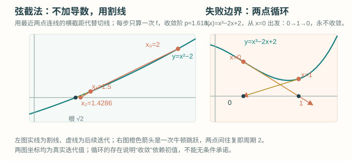

CHAPTER 21 · NUMERICAL ANALYSIS
非线性方程求根（二）：牛顿法、弦截法与收敛阶
上一章的二分法稳妥却慢、不动点迭代快慢取决于 g′。这一章把不动点迭代选成最好的那个 g：用切线线性化 f，就得到求根的“效率之王”——牛顿法。它会二次收敛，也会被一个坏初值彻底击溃。
01 · 从迭代到牛顿法
输入：连续可微的 f 与一个初值 x₀。输出：近似根 x̃，满足 |x̃−x*|≤ε。假设：f′(x*)≠0（单根）且初值落在吸引域内——这正是本章要划清的安全边界。
回顾上一章：f(x)=0 可改写为 x=g(x)，迭代 x_{k+1}=g(x_k) 的收敛率由 |g′(x*)| 决定。只要取 g(x)=x−f(x)/f′(x)，就能让 g′(x*)=0，把线性收敛提升为二次收敛。这条 g 就是牛顿法。
02 · 切线代数的二次收敛
在当前点 x_k 用一阶泰勒展开线性化 f：f(x)≈f(x_k)+f′(x_k)(x−x_k)。令近似式为零，解出下一个迭代点，就是牛顿迭代公式：
把 f(x*)=0 在 x_k 处展开，代入 x*=x_k+e_k：
0 = f(x_k) + f′(x_k)e_k + ½f″(ξ)e_k²。两边除以 f′(x_k)，再与 (21.1) 相减，得到误差递推：
误差以平方出现，这就是二次收敛的根源：只要 |e_k| 小于 1，下一步就小得更多，有效十进制位数大致每步翻倍。若 f′(x*)≠0、f″ 连续，则存在常数 C 使 |e_{k+1}|≤C|e_k|²，其中 C≈max|f″|/(2min|f′|)。

f(x)=x²−2，从 x₀=2 出发切线交横轴于 1.5→1.4167；右图误差 0.586→0.086→0.0025→2.1×10⁻⁶→1.6×10⁻¹²，每步位数约翻倍。数据为真实迭代值。03 · 几何意义与收敛条件
几何上，牛顿法就是在 (x_k, f(x_k)) 处作切线，取切线与横轴的交点作为 x_{k+1}，所以又叫切线法。它把“找根”换成“不断重化切线”，每一步都用一次线性模型偷懒。
局部收敛定理。若 f 在根 x* 附近 C²、f′(x*)≠0，则存在邻域使得：① x* 是唯一根；② 邻域内任取初值都二次收敛。用不动点视角看，g′(x*)=0 正是二次收敛的充分条件。
Newton–Kantorovich 定理把“初值足够近”换成一个可算的判据：在 f′ Lipschitz 连续且 f′(x₀) 可逆时，只要初始残差 ‖f(x₀)‖ 充分小（满足 h = ‖f″‖·‖f(x₀)‖/‖f′(x₀)‖² < ½ 形式的条件），迭代就收敛。它不要求单根，是一个较强的理论保证；但条件本身仍需 f″ 的信息，工程中常用它估初值，而非逐次验证。
04 · 失败边界与阻尼
牛顿法不是万能的。它在远离根处用切线代替曲线，线性模型可能严重失真；一旦 f′(x_k)≈0，切线接近水平，x_{k+1} 会被抛向远方。下表是四类经典失败模式：
| 场景 | 原因 | 表现 | 对策 |
|---|---|---|---|
| 初值太差 | 远离根处线性化失效 | 发散或振荡 | 先用二分法/网格搜索给好初值 |
f′(x_k)≈0 | 切线近水平，步长爆炸 | 单步跳到巨大值 | 阻尼牛顿（引入步长 λ） |
重根 f′(x*)=0 | 二次收敛降为线性 | 收敛极慢 | 修正牛顿：乘重数 m |
| 周期循环 | 两点间往复（见图 2 右） | 永不收敛 | 换初值或换方法 |
阻尼牛顿法给步长加一个因子 λ∈(0,1]，用线性搜索（如 Armijo 准则）保证函数值充分下降：
当 λ=1 且当前步带来充分下降时，阻尼牛顿退化为原牛顿法，仍然二次收敛；只有在危险方向上才缩短步长。重根是另一个陷阱：f(x)=(x−x*)ᵐ·h(x) 时，修正格式 x_{k+1}=x_k−m·f(x_k)/f′(x_k) 可恢复二次收敛，代价是必须知道重数。
05 · 弦截法与 Müller 法
牛顿法要求解析导数 f′，而很多实际问题里导数难以写出或代价很高。用最近两点的差商近似导数，就得到弦截法：
几何上是用两点到线的割线代替切线。一个令人惊讶的结果是：它每步只算一次 f，收敛阶却是 p=(1+√5)/2≈1.618（黄金分割比）。这不是拟合，而是误差递推 |e_{k+1}|≈C|e_k|·|e_{k−1}| 的解。

x₀=2,x₁=1.5→1.4286→1.4146）。右：失败边界——f(x)=x³−2x+2 从 x=0 出发，牛顿法 0→1→0 陷入周期 2，永不收敛。Müller 法更进一步，用过三点 x_{k−2},x_{k−1},x_k 的二次插值抛物线求根，取靠近当前点的那个根。它同样不需导数，收敛阶约 1.84，而且因二次方程必有两个（可能为复数的）根，能自然追踪复根——这是实轴上迭代做不到的。三者对比如下：
| 方法 | 每步计算 | 需要导数 | 收敛阶 | 可求复根 |
|---|---|---|---|---|
| 牛顿法 | f + f′ | 是 | 2 | 需复初值 |
| 弦截法 | 1 次 f | 否 | ≈1.618 | 否 |
| Müller 法 | 1 次 f | 否 | ≈1.84 | 是 |
| 二分法 | 1 次 f | 否 | 1 | 否 |
06 · 实验与选型
用 f(x)=x²−2（根 √2）对比牛顿法、弦截法与阻尼牛顿法达到 10⁻¹² 所需步数。选择方法查看结果：
import math
f = lambda x: x*x - 2.0
fp = lambda x: 2.0*x
root = math.sqrt(2.0)
# 1) 牛顿法：单根、导数非零 ⇒ 二次收敛，有效位数翻倍
def newton(x0, tol=1e-12, nmax=60):
x = x0
for k in range(1, nmax+1):
x = x - f(x)/fp(x)
if abs(x - root) < tol:
return x, k
raise RuntimeError("未收敛")
xN, kN = newton(2.0)
assert abs(xN - root) < 1e-12 and kN <= 6
# 2) 弦截法：无极数，收敛阶 p≈1.618
def secant(x0, x1, tol=1e-14, nmax=80):
f0, f1 = f(x0), f(x1)
for k in range(1, nmax+1):
x2 = x1 - f1*(x1-x0)/(f1-f0)
x0, f0, x1, f1 = x1, f1, x2, f(x2)
if abs(x1 - root) < tol:
return x1, k
raise RuntimeError("未收敛")
xS, kS = secant(2.0, 1.5)
assert abs(xS - root) < 1e-12 and kS <= 8
# 3) 失败边界：f(x)=x³−2x+2 从 0 出发陷入 0↔1 周期 2
def newton_seq(x0, n):
xs=[x0]
for _ in range(n):
xs.append(xs[-1] - (xs[-1]**3-2*xs[-1]+2)/(3*xs[-1]**2-2))
return xs
cycle = newton_seq(0.0, 6)
assert abs(cycle[1]-1.0) < 1e-12 and abs(cycle[2]-0.0) < 1e-12
print("newton", kN, "| secant", kS, "| cycle", [round(v,3) for v in cycle[:4]])失败边界（可验证）：第一，牛顿法要求 f′(x_k)≠0，否则 (21.3) 的分母为零；第二，初值必须落在吸引域内，上图右的 0↔1 循环就是反例；第三，重根处二次收敛退化为线性，需用修正格式；第四，代码里的循环不是“未收敛”的偶然现象，而是有确切周期的确定行为，可用断言捕获。
原始资料与延伸阅读
本章将文献结论与本文独立构造的数值示例严格区分：收敛阶 p=2、1.618、1.84 为已知理论结果，而步数与迭代序列均为本文教学演示。
- SciPy · scipy.optimize.root_scalar：
newton、secant、halley、brentq等求根方法的统一接口与终止准则。 - P. Deuflhard, Newton Methods for Nonlinear Problems, Springer, 2011（doi:10.1007/978-3-642-23899-4）。牛顿法的仿射不变收敛理论与阻尼策略。
- Nicholas J. Higham, Accuracy and Stability of Numerical Algorithms, SIAM 第二版, 2002。停止准则与误差敏感性。